Stem miner (Diptera: Agromyzidae) in Aegopodium
| Record no.: | 0734 |
|---|---|
| Feeding guild: | Stem miner |
| Taxonomy: | Diptera: Agromyzidae: Ophiomyia sp. |
| Stages observed: | trace, puparium |
| Distribution observed: | IA |
| Hosts in Aegopodium: | A. podagraria (goutweed) |
- Mines found on the upper stems of plants growing in a garden bed in late July
- Included both whitish and brown discoloration
- No obvious black splotches of frass; only a few areas noted in the mine with indistinct wisps of faint greenish or brownish frass
- Mine reached up to within 1 cm of base of umbel
- At least two puparia noted; one was yellowish-green, the other black
- Puparia were formed under the epidermis with black anterior spiracles protruding
- Apparently Ophiomyia based on characteristics of mine and puparium
- Interestingly, Aegopodium podagraria is native to Europe and not the U.S. (Waggy 2010), but the Plant Parasites of Europe website reports only Phytomyza spp. leafminers among the agromyzid miners known from this host genus in Europe (Ellis 2026)
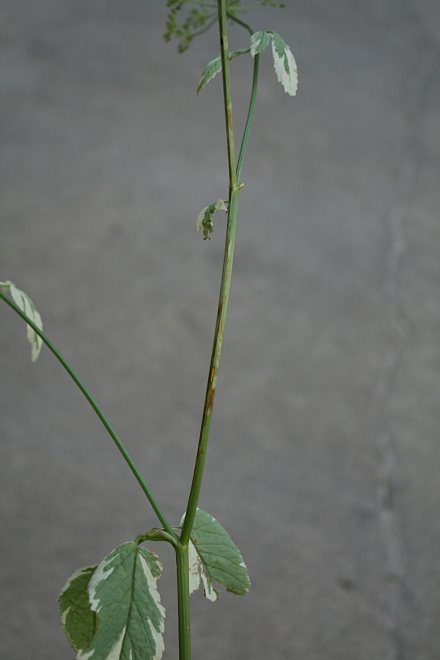
 Prev
Prev


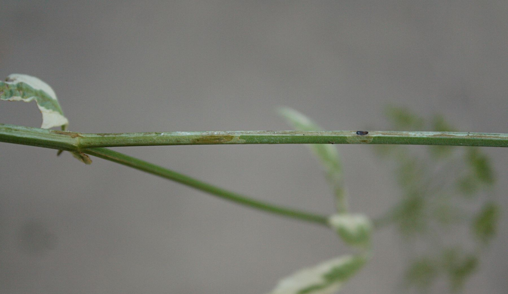

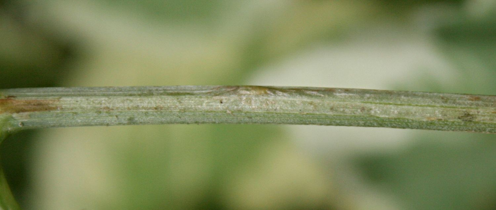

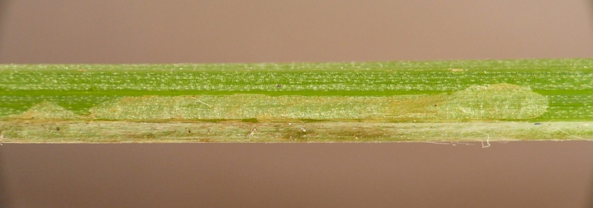

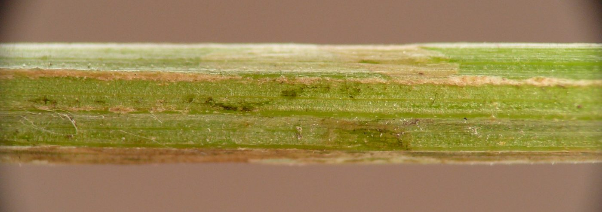

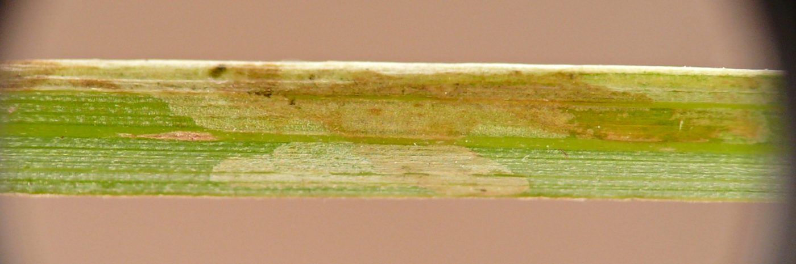

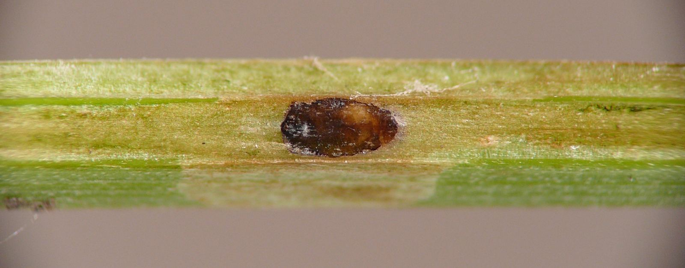

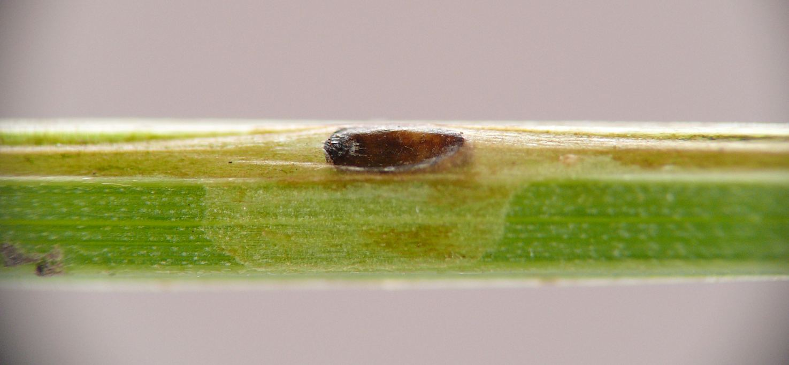

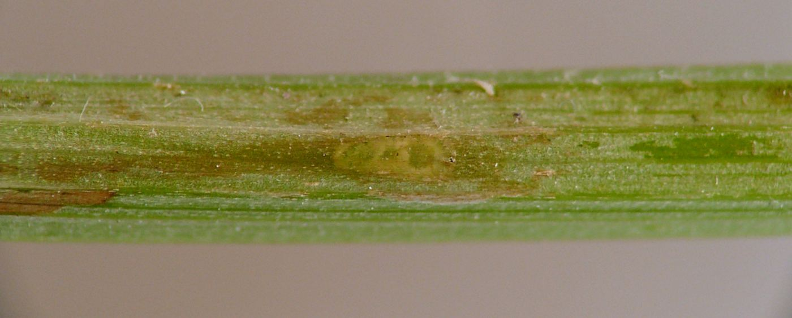

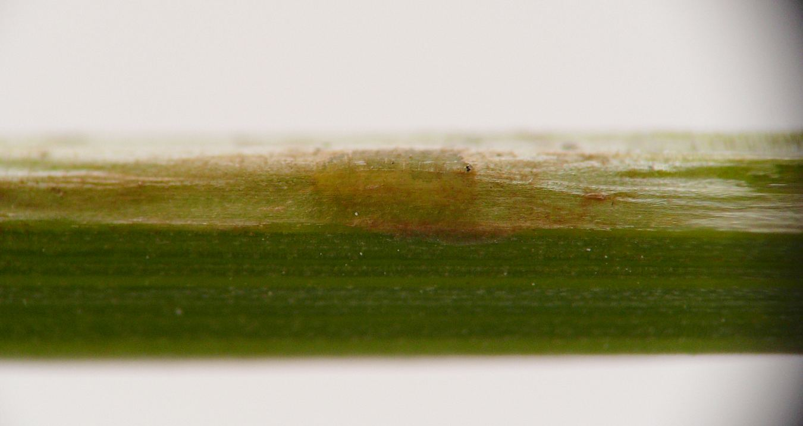

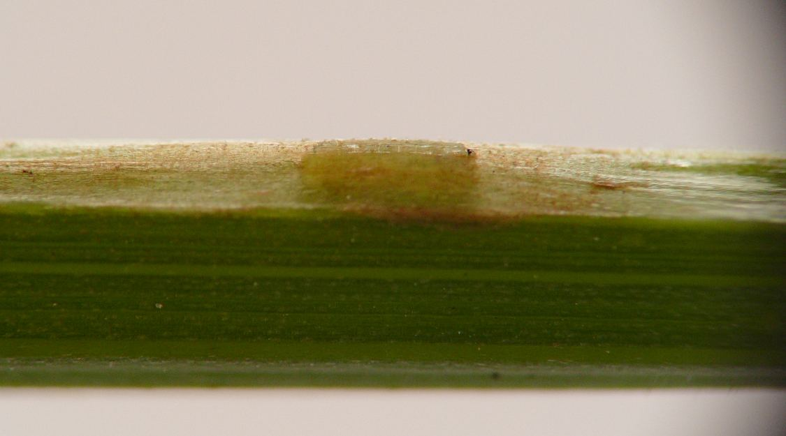

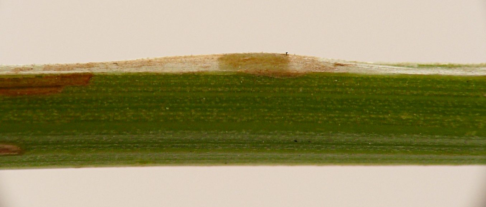

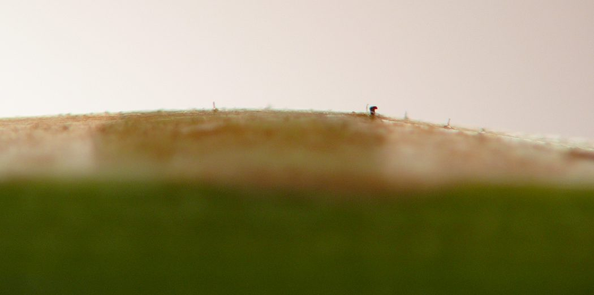

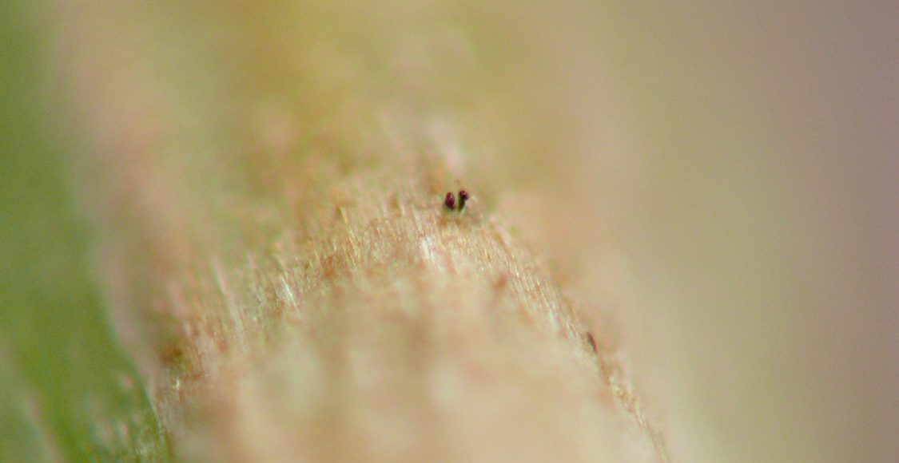
- Ellis, W.N. 2026. Aegopodium. In Plant Parasites of Europe [website]. Retrieved January 25, 2026 from https://bladmineerders.nl/host-plants/plantae/spermatopsida/angiosperma/eudicots/superasterids/asterids/campanulids/apiales/apiaceae/apioideae/careae/aegopodium/.[return to in-text citation]
- Waggy, M.A. 2010. Aegopodium podagraria. In: Fire Effects Information System, [Online]. U.S. Department of Agriculture, Forest Service, Rocky Mountain Research Station, Fire Sciences Laboratory (Producer). Retrieved January 25, 2026 from https://www.fs.usda.gov/database/feis/plants/forb/aegpod/all.html.[return to in-text citation]
Page created: February 9, 2026. Last update: October 24, 2026